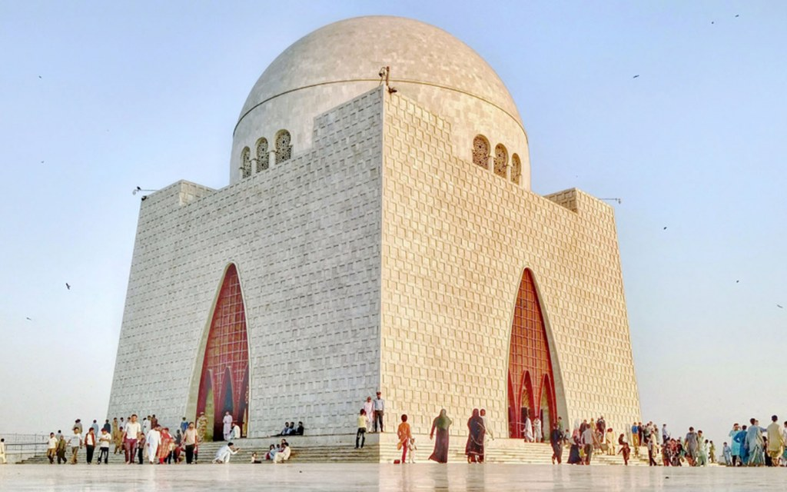
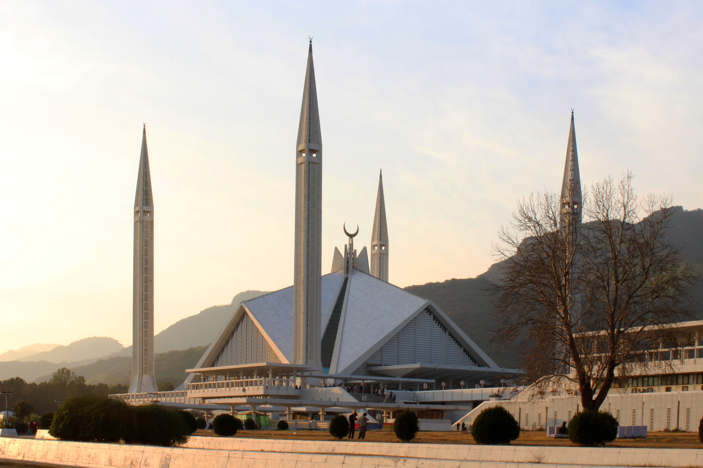
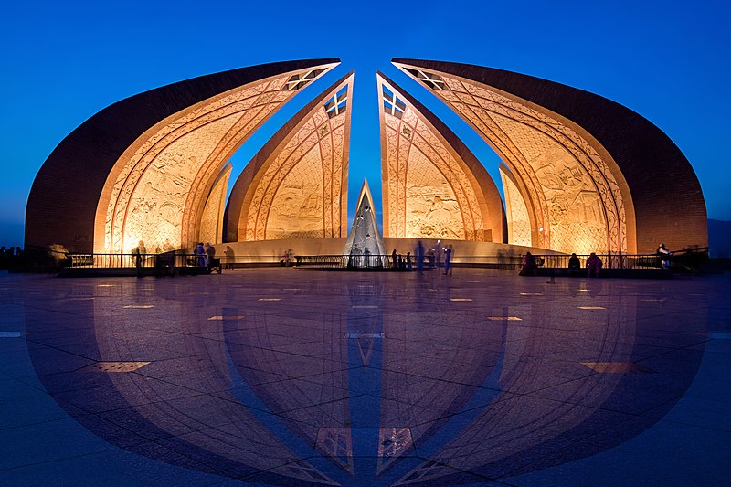

Minar-E-Pakistan
Minar-e-Pakistan (Urdu: مینارِ پاکستان, literally "Tower of Pakistan") is a tower located in Lahore, Punjab, Pakistan.[1] The tower was built between 1960 and 1968 on the site where the All-India Muslim League passed the Lahore Resolution (which was later called the Pakistan Resolution) on 23 March 1940 - the first official call for a separate and independent homeland for the Muslims of British India, as espoused by the two-nation theory. The resolution eventually helped lead to the creation of Pakistan in 1947.[2][3]
The tower is located in the middle of an urban park, called the Greater Iqbal Park.[4]

Mazar-E-Quaid
Mazar-e-Quaid (Urdu: مزارِ قائد), also known as Jinnah Mausoleum or the National Mausoleum, is the final resting place of Muhammad Ali Jinnah, the founder of Pakistan. Designed in a 1960s modernist style, it was completed in 1971, and is an iconic symbol of Karachi as well as one of the most popular tourist sites in the city.[1] The mausoleum complex also contains the tomb of Jinnah's sister, Māder-e Millat ("Mother of the Nation") Fatima Jinnah, as well as those of Liaquat Ali Khan and Nurul Amin, the first and eighth Prime Ministers of Pakistan respectively. The tomb of Sardar Abdur Rab Nishtar, a stalwart of the Muslim League from Peshawar, is also located there.

Faisal Mosque
The Faisal Mosque (Urdu: فیصل مسجد, romanized: faisal masjid) is the national mosque of Pakistan, located in the capital city, Islamabad.[1][2] It is the fifth-largest mosque in the world and the largest within South Asia, located on the foothills of Margalla Hills in Islamabad. It is named after the late King Faisal of Saudi Arabia. The mosque features a contemporary design consisting of eight sides of concrete shell and is inspired by the design of a typical Bedouin tent.[3]
A major tourist attraction in Pakistan, the mosque is a contemporary and influential piece of Islamic architecture.[4][5]

Pakistan Monument
The Pakistan Monument (Urdu: یادگار پاکستان) is a national monument and heritage museum located on the western Shakarparian Hills in Islamabad, Pakistan. The monument was constructed to symbolize the unity of the Pakistani people. It is dedicated to the people of Pakistan who sacrificed their "today" for a better "tomorrow".
The four large petals represent each of the four main cultures of Pakistan, the Punjabi, the Baloch, the Sindhi and the Pakhtun. The three smaller petals represent: the minorities, Azad Kashmir and Gilgit-Baltistan. Its elevation makes the monument visible from across the Islamabad-Rawalpindi metropolitan area and is a popular tourist destination.[1]